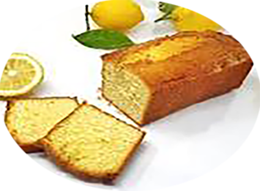

Cake citron

Pour 6 personnes
Préparation : 20 mn
Cuisson : 40 à 45mn
Ingrédients
- 250 gr de farine
- 150 gr de sucre
- 4 oeufs
- 125 gr de beurre
- 1 sachet de levure chimique
- 1 à 2 citrons
Recette
- Préchauffer le four à 180°C (thermostat 6).
- Beurrer et fariner un moule à cake d'environ 30 cm. Faire fondre le beurre (au bain-marie ou à température douce au micro-ondes).
- Pendant ce temps, laver le citron. En râper très finement la peau en prenant soin de ne pas râper la peau blanche (amère).
- Couper ensuite le citron en deux et le presser pour en recueillir le jus.
- Mélanger la farine, le sucre et la levure. Ajouter les œufs un à un, puis le beurre fondu et enfin le zeste râpé et le jus du citron.
- Verser la préparation dans le moule à cake et cuire au four environ 40 mn.
|